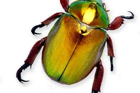

Welcome everyone to my first webpage. I would be sharing with you the little i know about insects and parasites.
Parasitology and Entomology
Parasitology
Parasitology is the study of parasites. Parasites are living organisms that are associated with food for all or part of their life cycle. The organism that provides the food is the Host.
Parasites have to adapt to 2 environments. The environments are:
- Micro environment: the habitat within the host that surrounds the parasite.
- Macro environment: the hosts habitat.
parasites are often described according to which site they inhabit; that is:
- Intracellular/Inside the membrane of the host cells.They are mostly microscopic.
- Extracellular/Outside the cell but within the body fluids or the matrix of tissues and organs.

The above is a random image of what a parasite looks like.
Francesco Redi is consisdered as the grandfather of Parasitology. He first described the liver fluke(fasciola).
Entomology
Entomology is the study of insects. Insects are a group of animals that display a tremendous variety when it comes to their appearance.
Insects have their body divided into 3;
- Head
- Thorax
- Abdomen

insects have a common characteristic feature, which includes:
- They have 3 pairs of legs
- body is divided into 3
- most of them possess wings
- have a pair of compound eyes usually accompanied by 2 or 3 simple eye called ocelli
- a pair of antennae
NOTE: we study insects is for the following reasons:
- They eat our crops
- They eat up stored food
- They cause diseases
- They maim or kill our livestock
- They annoy us
William Kirby is regarded as the father of Entomology.